Modul 3
AI i din arbejdsdag
I modul 1 og 2 byggede vi. Nu vender vi blikket mod de opgaver, du allerede har: mails, referater, dokumenter og regneark.

Hvorfor dette modul?
De fleste kommer ikke til at bygge apps hver uge. Men alle skriver, læser og regner hver eneste dag. Det er her, en AI-assistent som ChatGPT, Claude eller Copilot flytter mest i hverdagen. Som altid gør vi det først og taler om det bagefter.
Medbring en ægte opgave
Øvelserne virker bedst med dit eget materiale. Find en mail, du skal svare på, et referat,
du skal skrive, eller et dokument, du skal sætte dig ind i. Brug ikke materiale med
personoplysninger eller fortroligt indhold. Er du i tvivl, så brug eksemplerne herunder.
Øvelse 1: Skriv og omskriv
Hands-on, ca. 15 min
- Åbn den AI-assistent, du har adgang til (ChatGPT, Claude, Copilot eller Gemini).
- Indsæt en mail eller tekst, du alligevel skulle skrive, og bed om et udkast. Brug evt. skabelonen herunder.
- Bed derefter om tre varianter: en kortere, en venligere og en mere formel.
- Vælg den bedste, og ret den til med dine egne ord. Det sidste punktum er altid dit.
Du er min skrivehjælp. Jeg skal svare på mailen herunder. Skriv et udkast på dansk,
venligt og professionelt, højst 120 ord. Pointen er at jeg gerne vil have mødet
flyttet til næste uge uden at virke afvisende.
[indsæt mailen her]
Tip
Giv assistenten tre ting: hvem du er, hvad opgaven er, og hvordan resultatet skal se ud.
Jo mere kontekst, jo mindre skal du rette bagefter.
Løbet tør for beskeder?
Gratisudgaverne har alle en grænse. Rammer du den, så skift til en anden assistent, og fortsæt
øvelsen dér: ChatGPT, Claude, Gemini, Copilot og Le Chat kan alle det, øvelserne kræver.
At opleve to assistenter løse samme opgave forskelligt er i øvrigt en pointe i sig selv.
Øvelse 2: Fra bunke til overblik
Hands-on, ca. 20 min
- Find et langt dokument, en rapport eller et mødereferat uden fortroligt indhold.
- Indsæt det, og bed om et resumé på ti linjer med de tre vigtigste pointer øverst.
- Stil derefter spørgsmål til teksten: »Hvad siger dokumentet om økonomi?«, »Hvilke deadlines nævnes?«
- Slut med at bede om en liste over aftalte handlinger med ansvarlig person for hver.
Læs teksten herunder. Giv mig først et resumé på højst ti linjer på dansk.
Fremhæv derefter de tre vigtigste pointer som punktliste. Slut med en liste
over alle aftaler og handlinger med navn på den ansvarlige, hvis det fremgår.
[indsæt teksten her]
Øvelse 3: Tal og regneark
Hands-on, ca. 20 min
- Beskriv et regnearksproblem, du er stødt på, f.eks. »jeg vil tælle, hvor mange rækker der indeholder ordet afventer«.
- Bed om formlen til Excel eller Google Sheets, og bed samtidig om en forklaring på, hvordan den virker.
- Prøv formlen af i dit eget ark. Virker den ikke, så beskriv fejlen for assistenten, og prøv igen.
- Bonus: indsæt et lille uddrag af tal uden følsomt indhold, og bed om tre observationer.
Observation undervejs
Læg mærke til, hvor tit du retter i AI'ens svar, før du bruger det. Det tal skal ikke være nul.
Er det nul, læser du ikke kritisk nok.
Hvad skete der lige?
Begreb: Promptmønsteret
Alle tre øvelser brugte det samme mønster: rolle (du er min skrivehjælp),
kontekst (her er mailen og situationen), opgave (skriv et udkast)
og format (dansk, højst 120 ord). Det mønster kan du genbruge til stort set alt.

Begreb: Hallucination
En sprogmodel svarer altid, også når den ikke ved det. Den kan finde på tal, navne og kilder,
der lyder rigtige, men ikke er det. Derfor gælder reglen: alt hvad der skal være korrekt,
skal du selv kontrollere. AI'en leverer udkastet. Du leverer sandheden.
Begreb: AI som førsteudkast
Den største gevinst i hverdagen er ikke, at AI'en skriver færdigt for dig.
Det er, at du aldrig mere starter på et blankt stykke papir. Et udkast på ti sekunder,
som du retter til på to minutter, slår et kvarter med skriveblokade.
Grænserne: det skal du huske
- Fortrolighed: Personoplysninger og forretningshemmeligheder hører kun hjemme i værktøjer, din arbejdsplads har godkendt.
- Fakta: Kontrollér tal, navne, datoer og citater, før de går videre.
- Ansvar: Det er dit navn, der står som afsender. AI'en er et værktøj, ikke en undskyldning.
Refleksion i plenum
- Hvilken af de tre øvelser rammer flest timer i din typiske uge?
- Hvornår stolede du for meget eller for lidt på svaret?
- Hvilken opgave vil du give AI'en som det første i morgen?
Kilder og videre læsning
- Om hallucinationer, hvorfor modellerne digter
- Datatilsynet om beskyttelse af personoplysninger, også når du bruger AI